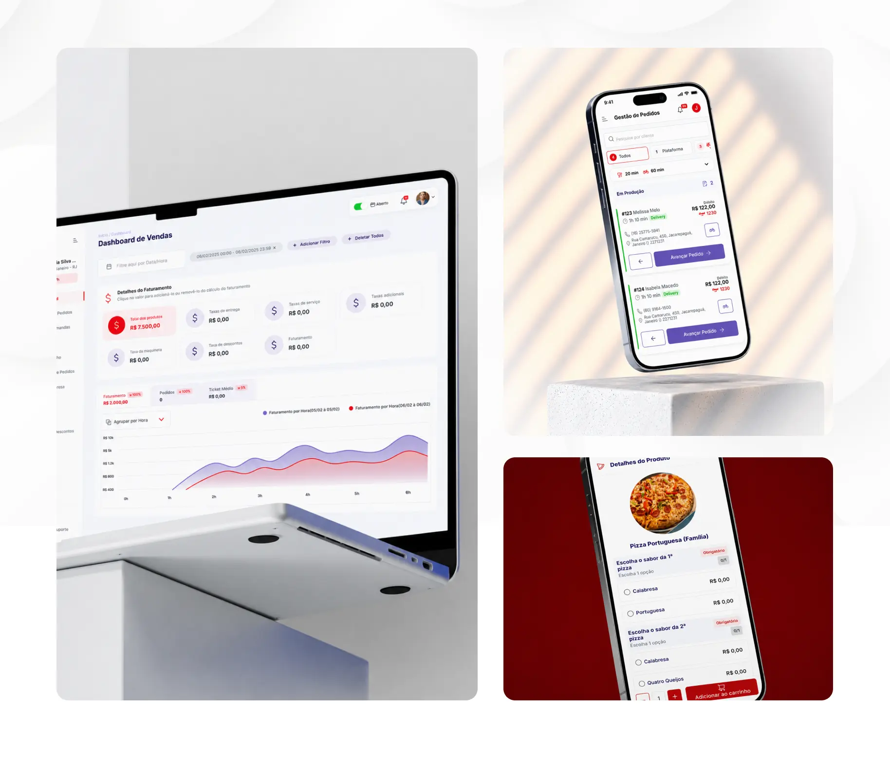
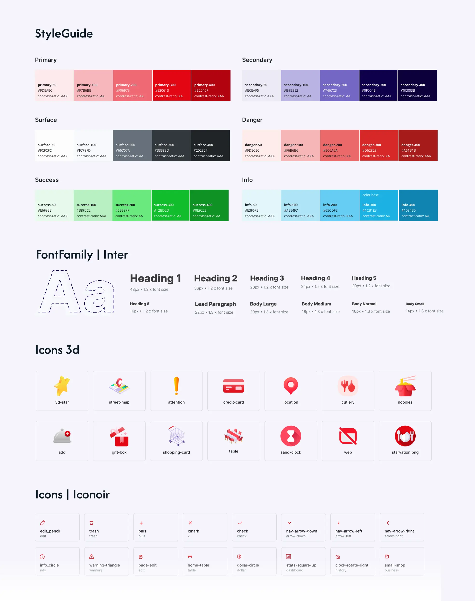
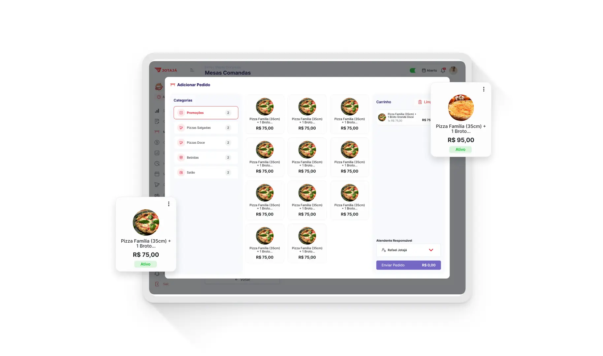
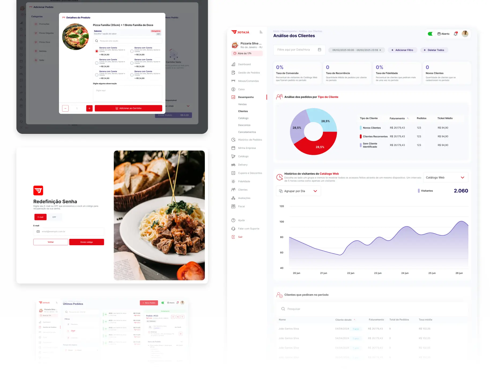
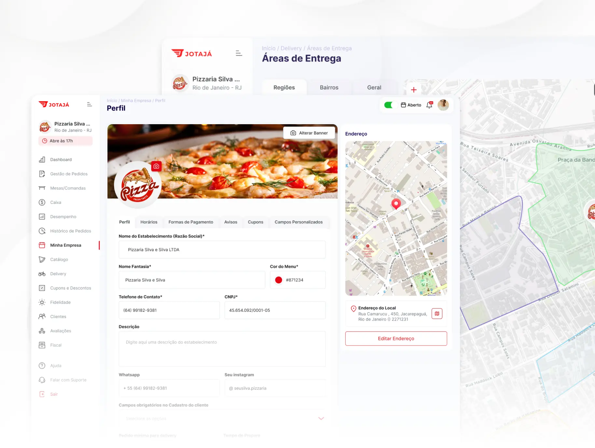
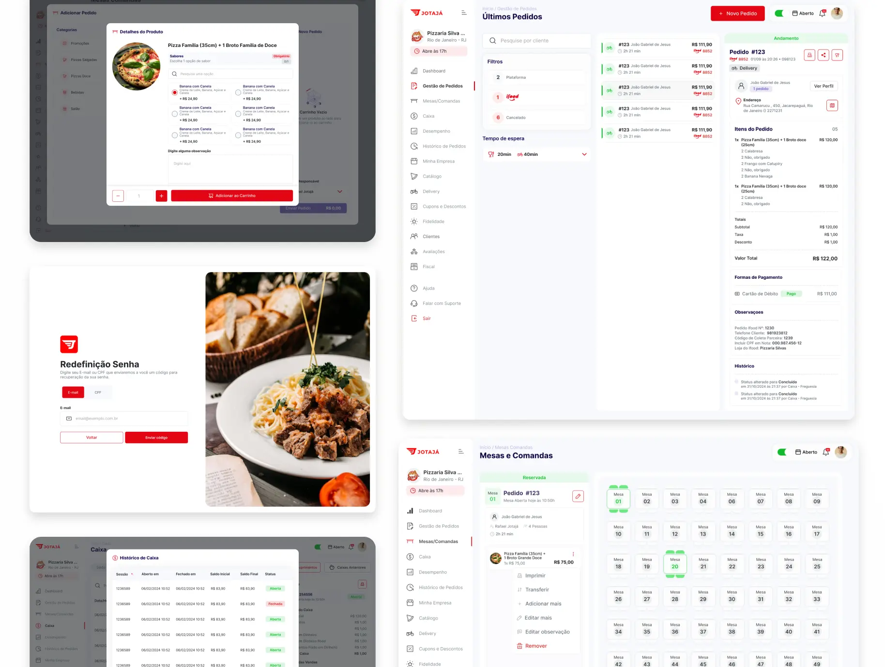

FoodProduct DesignStyle GuideDesign
System
Jotajá
Nova área de gestão para restaurantes, criada para modernizar a operação e comportar todos os módulos necessários em uma plataforma administrativa completa.

Role para explorar ↓
O problema
Uma gestão que precisava evoluir
O cliente precisava desenvolver uma nova área da plataforma dedicada à gestão dos restaurantes. A interface existente tinha um layout antigo e já não comportava a quantidade de informações, tarefas e configurações necessárias para a operação.
O desafio era transformar um escopo extenso em uma experiência clara, consistente e preparada para crescer sem aumentar a complexidade para quem usa o sistema todos os dias.
17áreas principais
+100telas desenhadas
Desktop + Mobileexperiência responsiva
LoginDashboardPedidosClientesMesas e
comandas
CaixaRelatóriosHistórico de pedidosMinha empresa
CatálogoDeliveryCupons e descontosFidelidade
AvaliaçõesFiscalAjudaSuporte
Objetivos
Transformar dados em decisões rápidas
A nova área precisava apoiar uma operação intensa sem sobrecarregar o usuário. O foco foi organizar um escopo amplo, dar visibilidade ao desempenho e facilitar o acesso às tarefas mais recorrentes.
Centralizar a gestãoFacilitar leitura de
indicadoresAcelerar tarefas operacionais
Passo 01
Escopo e arquitetura
Mapeamento dos 17 módulos da gestão de restaurantes, organização das prioridades e pesquisas para explorar possibilidades iniciais de dashboard e navegação.

Visão da operaçãoPasso 02
UI e style guide
Criação da interface no Figma com ícones, cores, tipografia, componentes e estados para dar consistência a mais de 100 telas e permitir a evolução da plataforma.

Arquitetura de informaçãoPasso 03
Fluxos, dialogs e mobile
Desenvolvimento dos fluxos no front-end, construção de dialogs e entrega da experiência mobile para que o time pudesse dar continuidade ao projeto com os comportamentos principais definidos.



Demonstração
Veja a experiência em movimento
Uma visão do comportamento da interface, das transições, da navegação completa e da experiência de visualização dos cartões.
Passo 04 · Resultado final
Uma base pronta para crescer
O resultado é uma nova área administrativa com mais de 100 telas, componentes documentados, fluxos, dialogs e versão mobile, pronta para apoiar a gestão dos restaurantes e a continuidade do desenvolvimento.
